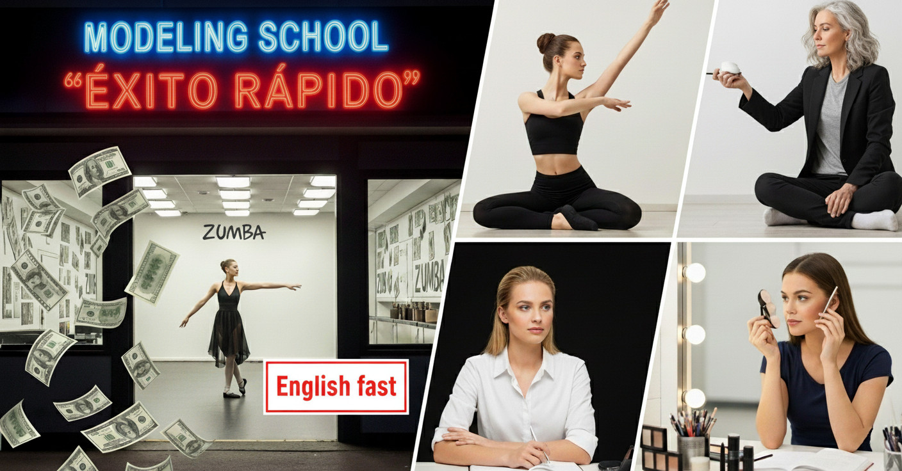

✅ Escuela para modelos profesionales ⭐️
Escuela o academia o cursos para modelos profesionales puedes encontrar en Internet por montones.
Actualmente no hay una que dé lo importante para tu desarrollo profesional. Casi todas están enfocadas a capitalizarse (sacarte el dinero).
Yo soy Model/Runway Coach y constantemente estoy conociendo gente para aprender y ser mejor, y en mi camino me he encontrado a muchos que se dicen ser profesionales, pero lamentablemente son muy malos en lo que según hacen y constantemente mienten de quienes han capacitado. Como cuando dicen haber capacitado a una persona reconocida o una modelo fuera de lo común, pero si tuvieras la oportunidad de preguntarle directamente a ella, es seguro que ni le conozca.
También modelos que pretender ser coach, pero les falta experiencia o la capacitación. Se que tienen buenas intenciones al querer capacitar a otras chicas como modelos profesionales, pero el detalle esta en que ocasionalmente lastiman a sus alumnas por desconocimiento e ignorar las diferencias que hay entre cada chica y su estilo.
Si conoces algún coach por recomendación, por muy bueno que sea, tiene que tratarte con respeto. Una cosa es presionarte para tu crecimiento y otra insultarte o haciendo bromitas a tu persona.
Un detalle importante, si encuentras un curso que te recomienden mucho… es importante el tiempo que te dedican a tu preparación. Hay unos que pretenden hacerte modelo profesional en unas pocas clases en menos de un mes. Pero la realidad y por la experiencia que tengo, se lleva no menos de 3 meses o 12 sesiones de 4 horas aproximadamente. Dependerá de tu constancia.
Es como querer estar fitness o definida en menos de un mes de ir al gimnasio sin hacer dieta. Esto lleva tiempo y constancia.
¿Hay escuelas dedicadas al modelaje?
Sí. Con años de experiencia y mucho que mostrar, pero en ocasiones envejecen y dejan de lado la formación para comenzar a hacer dinero con el sueño de las chicas.
Esto lo puedes notar cuando la escuela de modelos te ofrece niveles y servicios extras para tu formación cuando todo tendría que estar incluido.
Soy de la idea de evaluar con una entrevista el caso de cada una y de acuerdo a su perfil trabajar; ya que no es lo mismo una chica que es tenista, que una bailarina, las dos chicas tendrán diferentes estilos y modos; y la diferencia se puede notar en su postura y caminado. O la chica que nunca ha caminado con tacones altos y se puede lesionar fácilmente.
Hay escuelas que te pueden contactar con agencias y/o fotógrafos para que comiences ya que hayas terminado el curso con ellas, esto sería su parte fuerte al tomar sus cursos.
Te recomiendo leer ¿Como trabaja una agencia de modelos? y ¿Como encontrar un fotógrafo por intercambio?
Sino conozco a nadie bueno ¿Que cursos debo tomar?
En este punto quizá ya hayas buscado con quien prepararte, pero nadie te convence por completo o posiblemente sea muy caro.
Entra a clases de ballet, flamenco y/o zumba; estas actividades te ayudarán a mejorar mucho tu postura y caminado (no tanto como modelo, pero sí mejor).
Clases de automaquillaje para tu día a día o que sepas producirte en tus sesiones fotográficas o para los castings que asistas ya trabajando como modelo. Este punto ya lo mencioné en CERTAMEN DE BELLEZA.
Un valor para la modelo, es que puede solucionar detalles en el momento de trabajar en alguna producción. Por ejemplo si estás en un evento y el maquillista o peinador no les es posible asistir, tú puedes producirte para verte espectacular y apoyar a otras. Es algo que se aprecia mucho cuando se tienen estos problemas de último momento.
Tomar Cursos de Ingles será muy importante, ya que te toparás con extranjeros de todo el mundo y es el idioma que más usan en la industria… aunque ha cambiado ligeramente al español.
Algo que no encontrarás en estos cursos, es el desarrollo de la mentalidad de ser mejor y de como tomar las situaciones que se presentan constantemente en el camino a tu éxito.
En caso de que entres a uno de los cursos que ofrecen agencias y particularmente otras modelos; pide que te faciliten una lista de agencias de modelos confiables con las que puedes contactar, preferentemente enfocadas a tu perfil.